Singular: de cero a dos decks en una semana
Cómo usé cinco herramientas de IA generativa en paralelo para explorar seis direcciones visuales — y cambiar el tipo de conversación con el stakeholder.
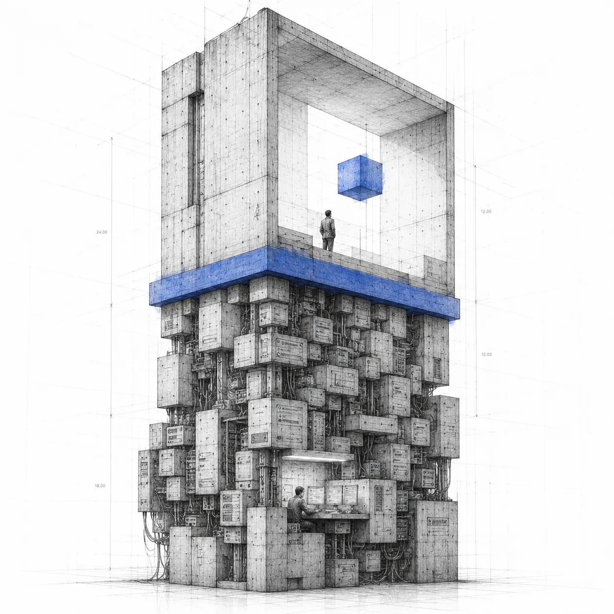
El CEO de N5 baja una visión: Singular, una plataforma B2B de customer engagement con IA para bancos. Hay arquitectura técnica, hay hipótesis comercial, hay intuición fuerte sobre el lugar en el mercado. Lo que no hay es un producto diseñado, una narrativa visual, ni una manera concreta de mostrarle al equipo y a clientes cómo se ve la cosa.
El encargo fue claro: en una semana, producir algo que sirviera tanto para alinear internamente como para vender. Sin más contexto que eso.
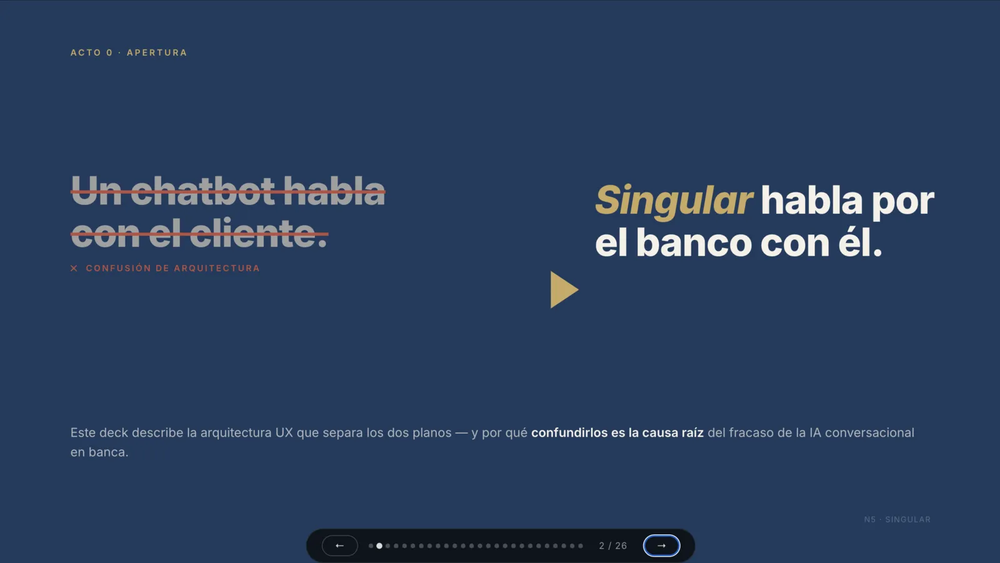
El punto de partida: lo que Singular no es. La propuesta se entiende en un segundo.
Lo primero que hice no fue abrir Figma. Fue entender el producto — y la primera decisión de diseño que tomé cambió todo lo que vino después: Singular no es un producto, son dos.
Un panel operativo para el CRM Manager del banco — alta densidad, dark mode, acciones en tiempo real. Y un panel directivo para el C-level — read-only, narrativa de arriba hacia abajo, síntesis estratégica. Tratarlos como una sola cosa habría comprometido a los dos. Separarlos fue el primer entregable de la semana, y fue conceptual: no había dibujado nada todavía.
A partir de ahí el trabajo corrió en dos carriles en paralelo.
El primero fue el deck de UX — la arquitectura de experiencia del sistema completo. Cómo funciona Singular como producto, sus tres capas (el cerebro que decide, la voz que ejecuta, el cliente que vive la consecuencia), los arquetipos de usuario, la lógica de canales.
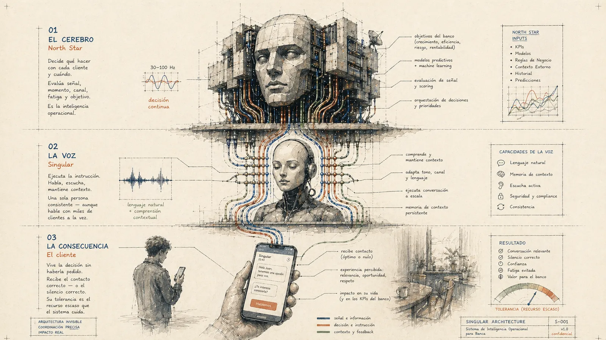
Las tres capas del sistema en Estilo Lápiz: el cerebro (HOPE), la voz (North Star), el cliente. Ilustración generada con Midjourney desde el prompt canónico del sistema visual.
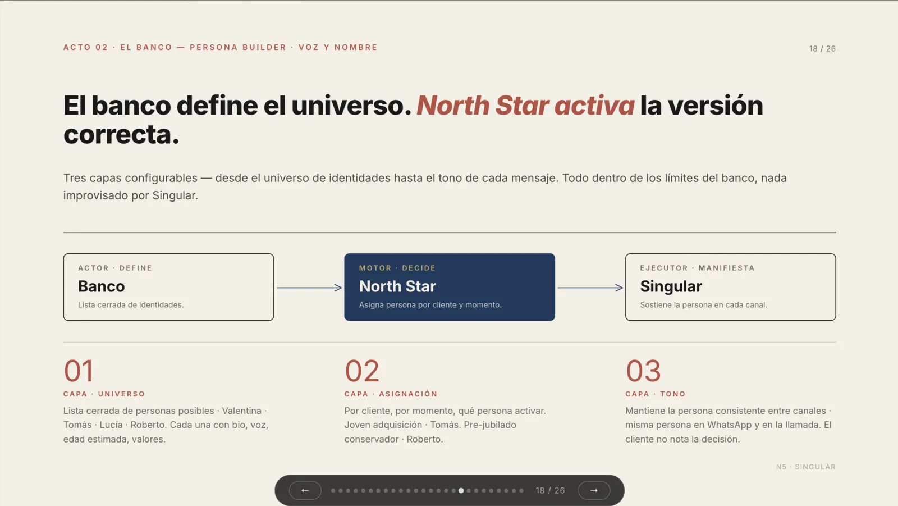
"El banco define el universo. North Star activa la versión correcta." — Slide del deck de UX.
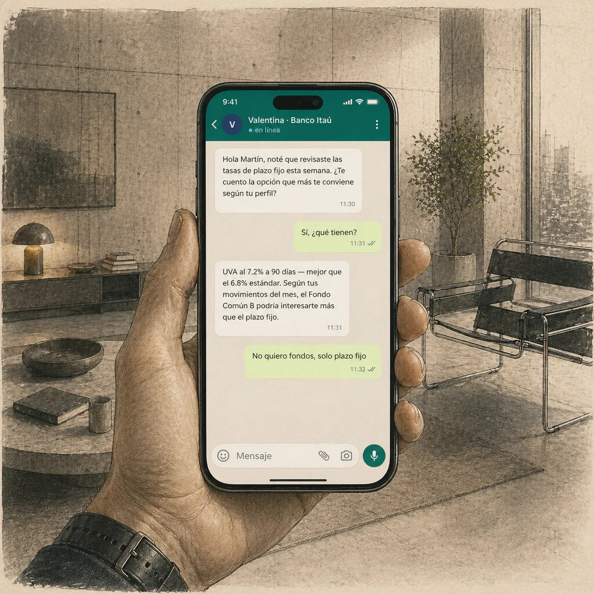
Valentina, la voz de North Star. Una conversación de WhatsApp como materialización concreta de la experiencia del cliente final.
El segundo carril fue la exploración visual del admin. En vez de proponer una dirección y defenderla, decidí mapear el espacio completo: cinco herramientas de IA generativa distintas, mismo brief para todas, seis variantes visuales en paralelo. No para mostrar que podía producir mucho, sino para que el CEO pudiera elegir con criterio real en vez de aprobar a ciegas.
El insight que apareció en el proceso: cada herramienta de IA tiene una "voz por defecto" que tira hacia un estilo. Lovable tira a fintech limpio, v0 tira a Linear, Stitch tira a denso. Pelearle a esa voz desperdicia tiempo. Aprovecharla deliberadamente — usar cada herramienta para lo que mejor hace — es lo que permitió explorar seis direcciones en un día.
| Variante | Dirección visual | Herramienta |
|---|---|---|
| A | MOB Light — sistema propio de N5, modo claro | Claude Design |
| B | MOB Dark — sistema propio de N5, modo oscuro | Claude Design |
| C | Liquid Glass — física de luz, visionOS aplicado | Claude Code |
| D | Bloomberg Style — máxima densidad de datos | Lovable |
| E | Bugatti — monocromático total, disciplina extrema | Stitch |
| F | Lápiz Dark — editorial cream en modo oscuro | v0 |
Para cada variante se documentó qué herramienta se usó, qué prompt se le dio, qué tuvo que corregirse a mano, y qué tan rápido se pudo iterar. Esa documentación es parte del entregable.
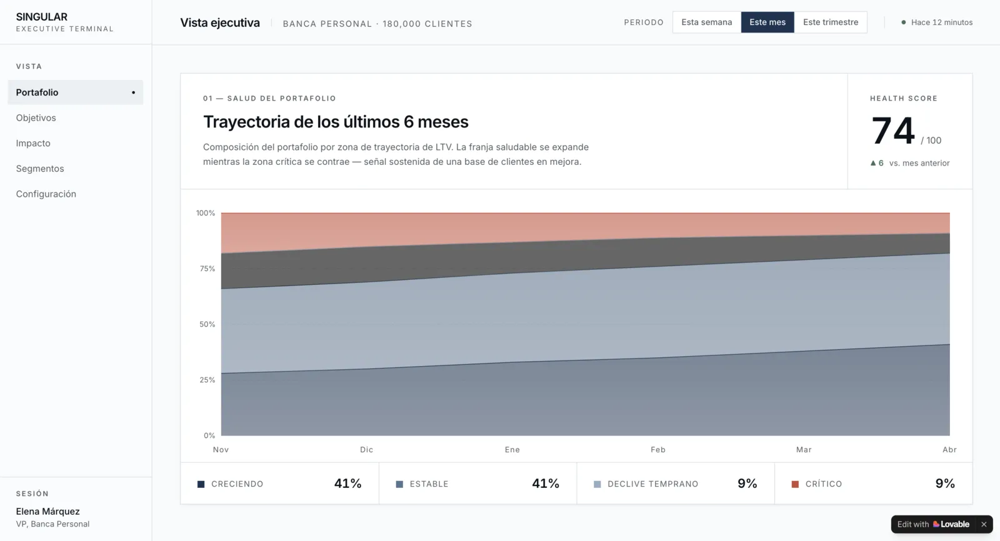
Variante D · Bloomberg Style — Lovable. Máxima densidad de datos, sin concesiones estéticas. La dirección más cercana al contexto bancario real.
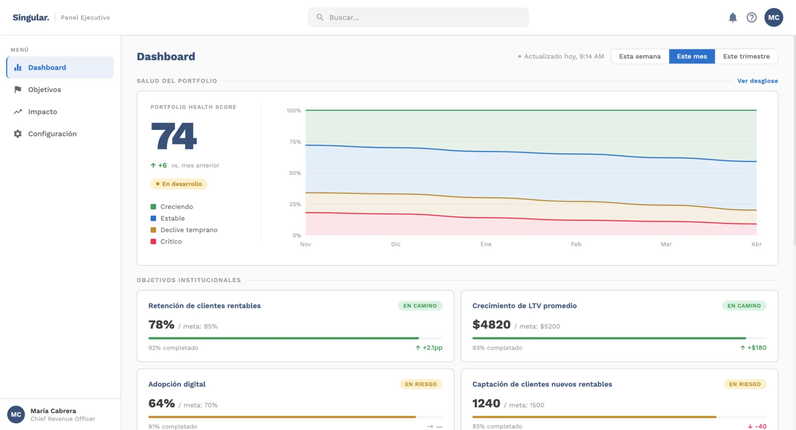
A · MOB Light — Claude Design. El sistema de diseño propio aplicado al producto. Coherencia total con N5 Now.
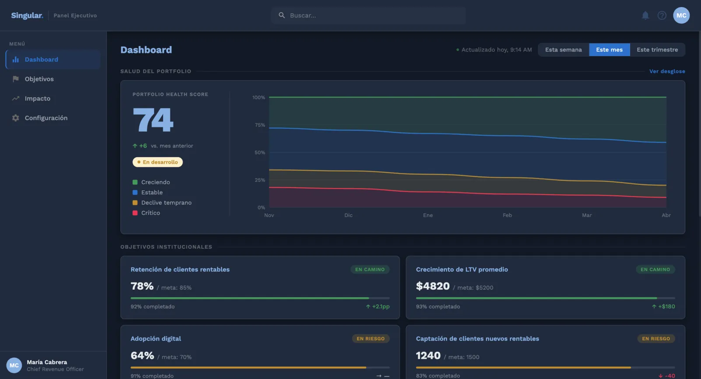
B · MOB Dark — Claude Design
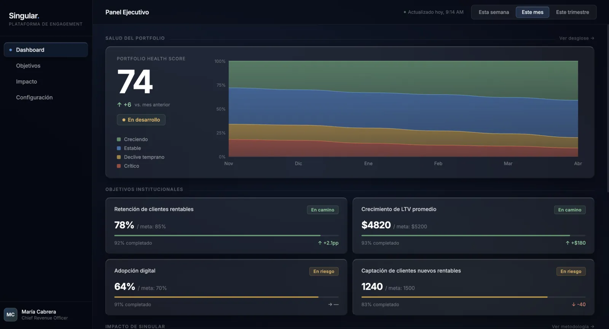
C · Liquid Glass — Claude Code
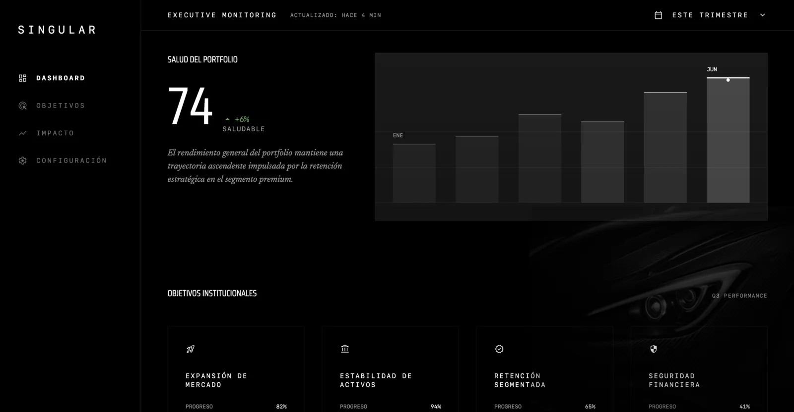
E · Bugatti Style — Stitch
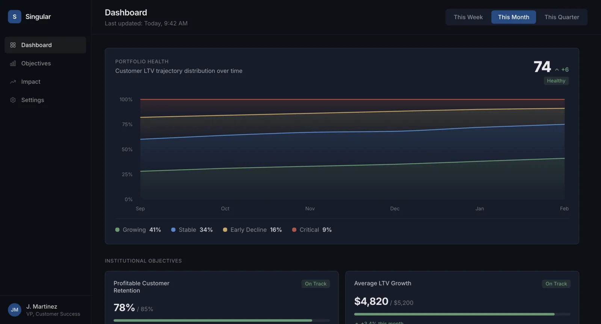
F · Lápiz Dark — v0
Dos decks accionables al final de la semana. El de UX para alinear al equipo sobre qué se está construyendo. El visual para que el CEO tomara una decisión real sobre estética y dirección — con trazabilidad completa de por qué se consideró cada variante y por qué se descartó.
La tesis metodológica que guió todo: la IA como co-piloto, no como ejecutora. Cada decisión de diseño la tomé yo. Cada producción de assets pasó por al menos una herramienta de IA. El rol del designer no desaparece — se convierte en director, curador y crítico de output.
El CEO entró a la reunión final con una decisión real para tomar — y la tomó: Bloomberg Style, la dirección de máxima densidad de datos. La más cercana al contexto bancario real, y la más difícil de defender sin haberla explorado contra las otras cinco. Eso es lo que más me importa de este caso: no el volumen de lo que se produjo, sino el tipo de conversación que habilitó. En vez de "te traigo lo que decidí", la dinámica fue "te traigo el espacio para que decidas vos".
Y lo que quedó demostrado — al menos para mí — es que la velocidad bien usada no es un atajo. Es lo que te permite explorar el problema en lugar de resolver solo una versión de él.
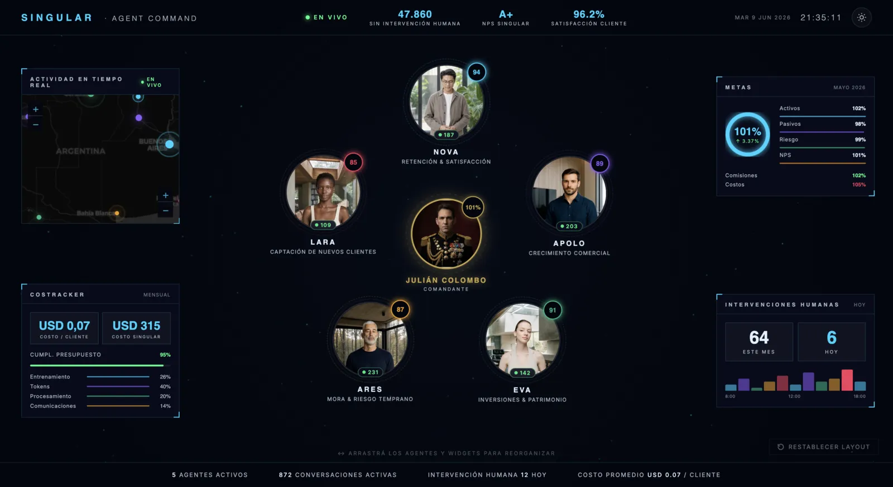
Singular tiene un producto en desarrollo. Pero cuando el CEO necesita dar una keynote en Fintech Americas, slides no alcanzan. El encargo fue dar un volantazo: olvidar el producto por un momento y pensar como un show. Esta demo no es Singular — es el concept car del salón. Una pieza funcional para que la sala vea hacia dónde va el sistema antes de que exista.
Ver demo en vivo →